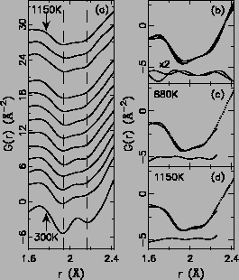
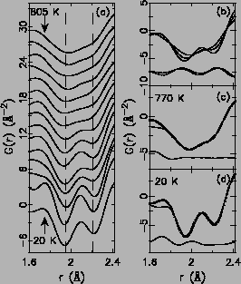
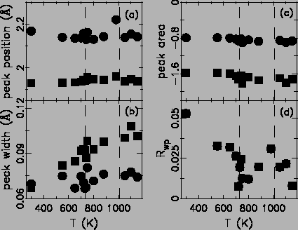
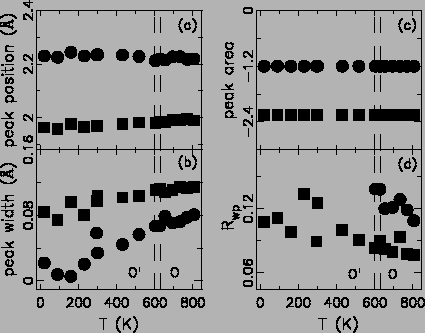

|
  |
Within the low temperature O phase, increasing the temperature
will enhance the atomic thermal motions, which in turn will broaden
PDF peaks [5]. This is what we see by comparing the
bottom five PDFs in Fig. 3.18(a). Across the JT
transition at TJT
phase, increasing the temperature
will enhance the atomic thermal motions, which in turn will broaden
PDF peaks [5]. This is what we see by comparing the
bottom five PDFs in Fig. 3.18(a). Across the JT
transition at TJT 735 K, the average crystallographic structure
indicates nearly regular MnO6 octahedra. If this is also true for
the local structure, the first Mn-O PDF doublet peak should turn into
a single peak around 2.0 Å. However, the experimental PDFs show the
opposite: the Mn-O doublet persists above JT transition. The long Mn-O
peak does not separate itself from the more pronounced short Mn-O
peak, however, is clearly evident as the high r shoulder. The
splitting remains larger than the thermal broadening of the
peaks. This behavior extends into the highest temperature measured. As
our local structure data covered the high temperature R phase for
the first time, the local JT distortion is then discovered to exist in
R phase as well. The PDFs at low r region show qualitatively and
intuitively that the JT distortion survives at all temperatures. The
peaks do broaden at higher temperature due to increased thermal
motion [5] and the two contributions to the doublet
are not resolved at high temperature. However, it is clear that the
peak is not a broad, single-valued, Gaussian at high temperature as
predicted from the crystallographic models.
735 K, the average crystallographic structure
indicates nearly regular MnO6 octahedra. If this is also true for
the local structure, the first Mn-O PDF doublet peak should turn into
a single peak around 2.0 Å. However, the experimental PDFs show the
opposite: the Mn-O doublet persists above JT transition. The long Mn-O
peak does not separate itself from the more pronounced short Mn-O
peak, however, is clearly evident as the high r shoulder. The
splitting remains larger than the thermal broadening of the
peaks. This behavior extends into the highest temperature measured. As
our local structure data covered the high temperature R phase for
the first time, the local JT distortion is then discovered to exist in
R phase as well. The PDFs at low r region show qualitatively and
intuitively that the JT distortion survives at all temperatures. The
peaks do broaden at higher temperature due to increased thermal
motion [5] and the two contributions to the doublet
are not resolved at high temperature. However, it is clear that the
peak is not a broad, single-valued, Gaussian at high temperature as
predicted from the crystallographic models.
|
  |
We would like to see if there is any change in the peak profile on
crossing the TJT beyond normal thermal broadening. To test this we
plot the change in this nn Mn-O peak between T=720 K and T=880 K, as
it crosses TJT, and compare this to the change in the peak on going
from 650 K to 720 K. The latter case has approximately the same
temperature differential (thermal broadening will be the same) but
there is no structural transition in that range. The difference curves
from these two situations, shown in Fig. 3.18(b), are
almost identical. We conclude that there is virtually no change to
the MnO6 octahedra as they go from the O to the O phase.
It is noteworthy that the shape of the difference curves mimics the
typical differences between two Gaussian with different widths.
to the O phase.
It is noteworthy that the shape of the difference curves mimics the
typical differences between two Gaussian with different widths.
Finally, to quantify the nature of the local JT distortions, we have fit two Gaussian peaks to the nearest-neighbor MnO6 doublet in the experimental data at all temperatures. The quality of the fits at ``low'' (880 K) and high (1150 K) temperature are rather good, as can be seen in Fig. 3.18(c) and (d). The position and width of each peak, and the total integrated intensity of the doublet, were allowed to vary (the intensities of the long and short bond distributions were constrained to be 1:2 in the fits). The weighted residual factor Rwp varies from 1% at high temperature to 5% at low-temperature indicating excellent agreement over all temperatures. Attempts to fit a single Gaussian in the O phase resulted in significantly worse agreements. The results of the temperature-dependent fits are shown in Fig. 3.19.
No anomaly of any kind can be identified across the TJT=735 K. The integrated intensities and peak positions do not change significantly with temperature from 300 K to 1150 K indicating that the average bond-lengths of the short- and long-bonds in the JT distorted octahedra are rather temperature independent. The peak widths increase slightly with temperature due to increased thermal motion (Fig. 3.19(b)); however, there is no clear discontinuity in the peak broadening associated with the phase transition. The broader low r peak (larger peak width) seems to come from the fact that two Mn-O bonds (two short and two medium) contribute to it, while the high r peak only comes from the two long Mn-O bonds. The results confirm that the local JT distortions persist, virtually unstrained, into the O and R phases.
To summarize here, we first confirmed the earlier XAFS
results [129,130] and establish that in the O
phase the full JT distortion persists in the local structure. Second,
we show for the first time that the high temperature R phase
(T 1010 K) is also locally fully JT distorted. Both qualitative
and quantitative analysis has been carried out.
1010 K) is also locally fully JT distorted. Both qualitative
and quantitative analysis has been carried out.